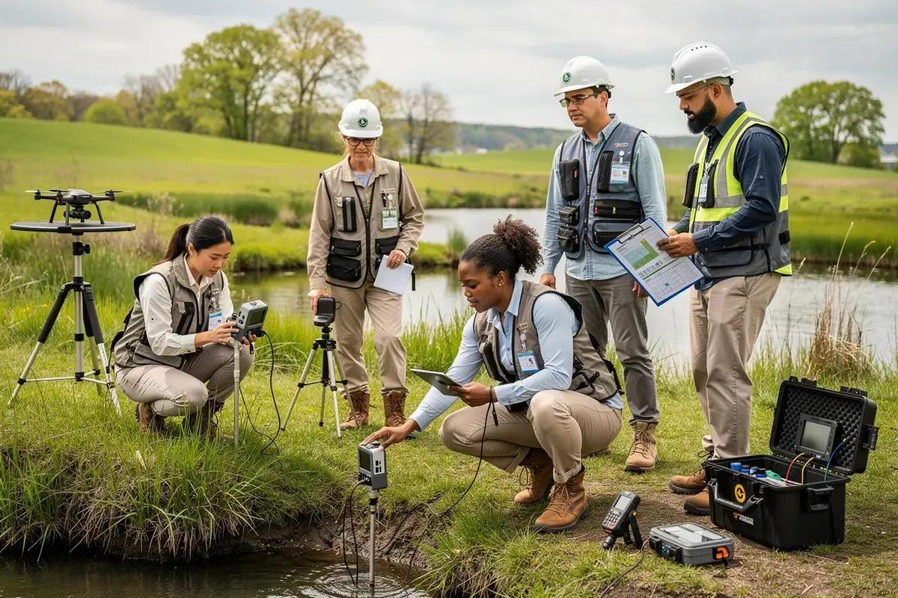
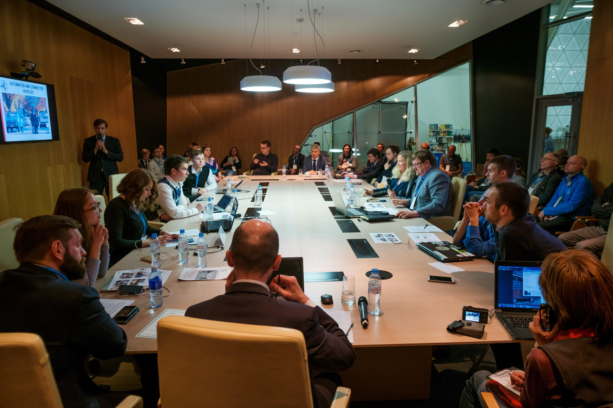
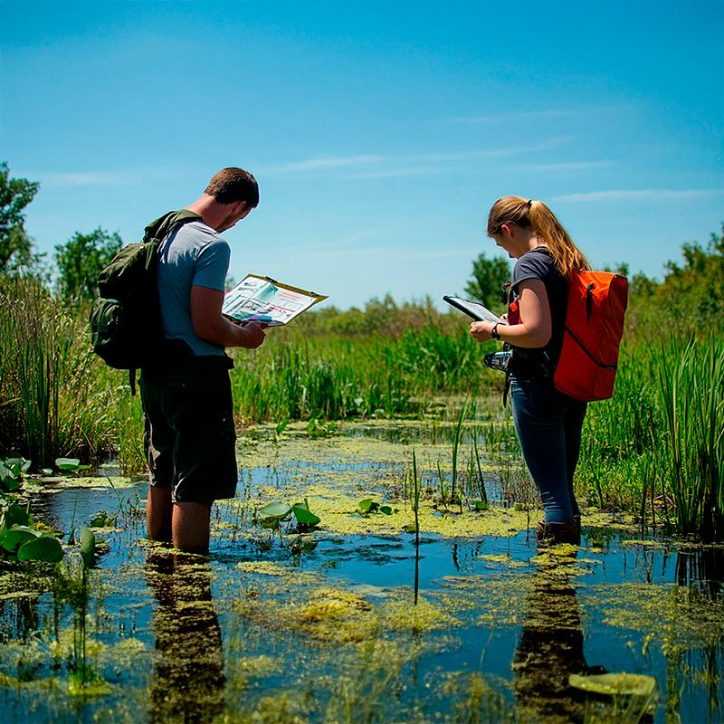
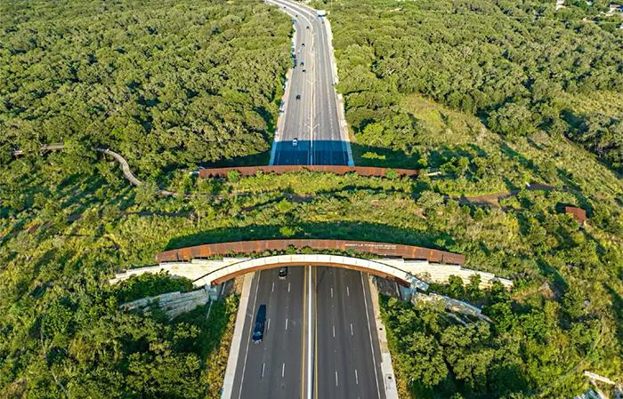
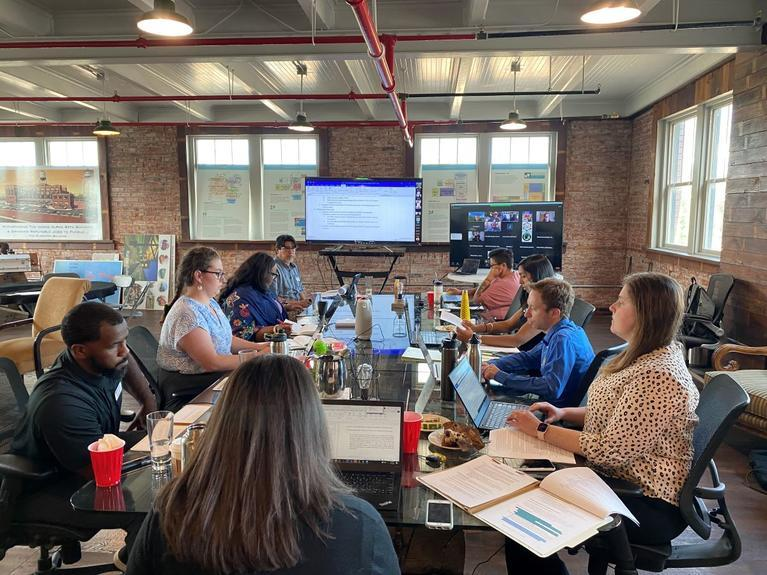

We deploy rigorous scientific audits at each point of the project timeline to identify risks, design buffers, and ensure quick regulatory clearance.
Our legal experts review municipal zoning codes, state statutes, and federal frameworks to determine if the project demands a full EIA. We identify critical environmental overlays, historical landmarks, or biological boundaries early to map out compliance levels.

We define the exact boundary limits of the environmental research. In consultation with regulatory agencies and local community groups, we isolate key areas of concern—such as watershed pollution, endangered species corridors, or acoustic dispersion grids.

Our biologists, geologists, and lab technicians carry out seasonal field tests before construction begins. We log biological species occurrence, measure groundwater parameters, delineate local wetlands, and map air and background sound contours.

Using the empirical data collected, we build computer models to forecast the project's long-term impacts. We simulate how stack emissions travel under local meteorological conditions, calculate groundwater flow changes, and track animal migration corridor bottlenecks.
We draft targeted engineering models to offset predicted ecological damage. This involves designing sediment catchment loops, planning sound attenuation screens, plotting wildlife overpasses, and designing biological wetland offsets.

We compile the final EIS documents, manage public review periods, host stakeholder feedback sessions, and present scientific evidence to state and federal licensing boards to secure project approval certificates.

We organize our environmental planning under a strict sequence of steps to ensure development goals balance ecological sustainability.
Adjusting project site layouts or scheduling excavation outside of bird nesting cycles to avoid destroying sensitive biological resources completely.
Deploying acoustic buffers, implementing speed limits for field transport, and installing sediment barriers (SWPPP) to reduce the spread of noise and dust.
Re-vegetating slopes after utility corridor installation and applying ecological restoration techniques to convert tailing pits back into natural topsoil.
When local damage is unavoidable, we create or fund new wetlands and biological preserves elsewhere, ensuring a net-positive environmental score.
How Envit manages files across agency checks, public commentary loops, and developer timelines.
Envit maps field findings and structures the Draft EIS report.
EIS files are published for a mandatory 45-day stakeholder review cycle.
We modify layouts and add ecological offsets to address feedback.
Final files are signed, and project permits are officially granted.
The list of scientific documents, data sets, and permit certificates Envit submits during our engagement.
Comprehensive statutory files detailed under federal NEPA or regional state codes.
Step-by-step blueprints for contractors to follow to maintain site compliance.
Detailed spatial mapping of wetlands, botanical contours, and sound dispersion boundaries.
Official authorization paperwork signed off by environmental agencies.